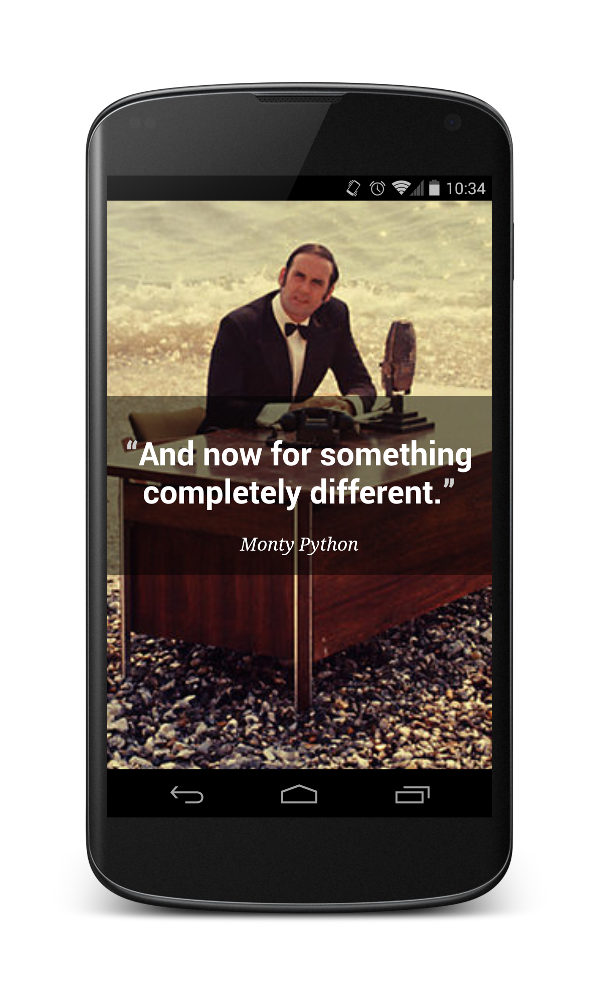
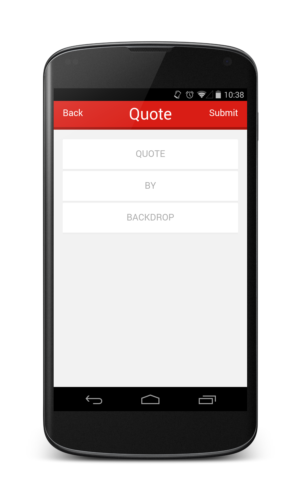

Tommy Ku's Method Stub
Tommy Ku's Method StubLaravel provides a simplified workflow to create a RESTful application namely RESTful Resource Controllers. It allows you to generate a set of standardized controller and route RESTful interface efficiently. Meanwhile AngularJS also has a module for facilitating RESTful resource exchange. In this article we will build a simplistic quoting (i.e. record what someone said) web app called OneLine which looks like this:

Img. Not quite, though
Source Code: on GitHub
The Structure
The back end is simple, there is only one object of interest per se namely “Quote”.
| Quote |
|---|
| + id: integer |
| + quote: string |
| + author: string |
| + image: string |
That means in Laravel, we will implement the logics (controller, model, database table and routes) around this “Quote” object. We will get down to the implementations soon.
The front end can get quite structured and easy to understand when ngResource, ui-router and $broadcast are used. In OneLine, there are 3 views: Quote list, View quote and Write quote.
| Quote list | View quote | Write quote |
|---|---|---|
 |
 |  |
Each of these views, or states are defined with ui-router and the “Quote” object are exchanged with the server via a RESTful interface using ngResource. The operation may seem trivial when looking at the views separately, but when joining the views together the transaction can get a little bit complex as it involves exchange of “Quote” object across views.
Having introduced the front/back end, what is left is the RESTful API. I wasn’t lying about the convenience of using Laravel’s resource controller. According to Laravel documentation a standardized RESTful API can be defined only by one line of code.
Route::resource('qoute','QuoteController');
Or 3 lines if you insist.
Route::resource(
'quote',
'QuoteController'
);
Using 1 (or 3) lines of code we have already defined a set of routes as follows:
| Verb | Path | Action | Route Name |
|---|---|---|---|
| GET | /quote | index | quote.index |
| GET | /quote/create | create | quote.create |
| POST | /quote | store | quote.store |
| GET | /quote/{quote} | show | quote.show |
| GET | /quote/{quote}/edit | edit | quote.edit |
| PUT/PATCH | /quote/{quote} | update | quote.update |
| DELETE | /quote/{quote} | destroy | quote.destroy |
We only need 2: index and store. We will get to the part excluding other routes and just take these 2.
The Laravel part

For Laravel setup, please refer to a previous tutorial which is a good place to getting started with Laravel.
Resource controller
Normally we create a controller under app/controllers/ by extending the BaseController class already defined there. To define a resource controller, we use artisan.
Under Laravel root,
php artisan controller:make QuoteController --only=index,store
Note --only=index,store restricts the generator to generate only 2 respective methods inside QuoteController.
<?php
/* app/controllers/QuoteController.php */
class QuoteController extends \BaseController {
/**
* Display a listing of the resource.
*
* @return Response
*/
public function index()
{
//
}
/**
* Store a newly created resource in storage.
*
* @return Response
*/
public function store()
{
//
}
}
As for the implementations, we will leave them as is for the moment and come back later after writing migrations and model of the “Quote” object.
Routes
<?php
/* app/routes.php */
Route::get('/', function()
{
return View::make('app');
});
Route::resource(
'quote',
'QuoteController',
['only' => ['store', 'index']]
);
I insist to make use 4 lines for the resource route. The 3rd parameter restricts what route to be defined as we need only store and index. At least, it saves us the trouble of conceiving the route names and controller method names.
The ordinary GET / route up there is the entry point of our web app, where the AngularJS web app itself is delivered to the client.
Migration files
Migration and seeding is a great way to deploy your app to a new environment by running artisan migrate command. Laravel migration has other awesome features for you to discover. In this tutorial, we just focus on building database tables. Before actually doing that, make sure you have app/config/database.php well configured.
First we need to create a migration:
php artisan migrate:make create_quotes_table --table=quotes
Open the migration file in app/database/migrations/DATE_OF_YOUR_MIGRATION_create_quotes_table.php, and write things like:
<?php
use Illuminate\Database\Schema\Blueprint;
use Illuminate\Database\Migrations\Migration;
class CreateQuotesTable extends Migration {
/**
* Run the migrations.
*
* @return void
*/
public function up()
{
Schema::create('ol_quotes', function(Blueprint $t)
{
$t->increments('id');
$t->string('quote');
$t->string('author');
$t->string('image');
$t->timestamps();
$t->softDeletes();
});
}
/**
* Reverse the migrations.
*
* @return void
*/
public function down()
{
Schema::dropIfExists('ol_quotes');
}
}
The method up() defines what should be done when running this migration, and down() reverts it. With migrations you do not even have to write SQL, just call the functions as in up(). You may refer to Laravel Schema Builder for creating fields of other data types.
To run the migration, we use artisan.
php artisan migrate
Model
Laravel 4.2 does not come with a model generator, though someone has implemented and open sourced it. In this tutorial, we stick to the basic Laravel, thus we need to write the model ourselves. “Quote” object is on its own, without clumsy hasOne/hasMany/belongsTo relations, so its model should look simple.
<?php
/* app/models/Quote.php */
use Illuminate\Database\Eloquent\SoftDeletingTrait;
class Quote extends Eloquent {
use SoftDeletingTrait;
protected $dates = ['deleted_at'];
protected $table = 'ol_quotes';
protected $hidden = ['created_at', 'updated_at', 'deleted_at'];
protected $fillable = ['quote', 'author', 'image'];
}
The model does look simple. Easily you can map the respective fields with the columns in the database table.
Putting them together
Now we have had everything needed to get the back end running, it is time to go back to QuoteController.
<?php
/* app/controllers/QuoteController.php */
class QuoteController extends \BaseController {
/**
* Display a listing of the resource.
*
* @return Response
*/
public function index()
{
// $sp means how many posts to skip,
// use this for infinite scrolling
if (!Input::has('sp')) {
$sp = 0;
} else {
$sp = intval(Input::get('sp'));
}
return Response::json([
'sp' => intval($sp)+10,
'quotes' => Quote::orderBy('created_at', 'desc')->skip($sp)->take(10)->get()
]);
}
/**
* Show the form for creating a new resource.
*
* @return Response
*/
public function store()
{
// validate input
if (!Input::has('quote')) {
return Response::make('Bad Request', 400);
}
// write records
// 'John Doe' said it if nobody said it,
// stub the backdrop image if no image is given
$quote = Quote::create([
'quote' => Input::get('quote'),
'author' => (Input::has('author')) ? Input::get('author') : 'John Doe',
'image' => (Input::has('image')) ? Input::get('image') : asset('res/stub.png')
]);
// done
return Response::make($quote);
}
}
The workflow suggested about tries to minimize the time required to introduce a resource to the system. This setup above will make more sense when you get to handle a bigger system, where multiple RESTful resources are to be handled.
The AngularJS part

Unlike Laravel I have not talked about Angular JS in this blog before. Grab a tutorial or two if you feel confused in the following part.
Little secret, the two colors Fire Engine Red and Sangria used in the app’s header actually came from Angular’s logo.
Prerequisites
OneLine makes use of a couple AngularJS libraries and JQuery, to get them properly, I suggest that you use bower (grab bower).
To get all our dependencies ready, run
bower install angular angular-resource jquery ngInfiniteScroll angular-ui-router
Don’t forget to include them in your app/views/app.php, this is the app’s entry point when user first visit the site.
<!DOCTYPE html>
<!-- app/view/app.php -->
<html ng-app="link">
<head>
<meta http-equiv="Content-Type" content="text/html; charset=utf-8" />
<meta http-equiv="X-UA-Compatible" content="IE=edge,chrome=1" />
<title>Quote - random quote for your inspiration</title>
<meta name="viewport" content="width=device-width,initial-scale=1.0,maximum-scale=1.0,user-scalable=0" />
<meta name="description" content="Light-weight search engine for stored links" />
<script type="text/javascript" src="js/jquery/dist/jquery.min.js"></script>
<script type="text/javascript" src="js/angular/angular.min.js"></script>
<script type="text/javascript" src="js/angular-ui-router/release/angular-ui-router.min.js"></script>
<script type="text/javascript" src="js/angular-resource/angular-resource.min.js"></script>
<script type="text/javascript" src="js/ngInfiniteScroll/build/ng-infinite-scroll.min.js"></script>
<script type="text/javascript" src="js/app.js"></script>
<link rel="shortcut icon" href="" />
<link rel="apple-touch-icon" href="" />
<link rel="stylesheet" href="css/base.css" />
<link rel="stylesheet" href="css/animate.css" />
</head>
<body ui-view>
</body>
</html>
Routes
Like Laravel’s route.php, AngularJS has its way of defining paths and they can be seens as Activity in Android apps. The <body> tag containing the directive ui-view serves as a container of content provided by each path, where their templates defined in a separate folder /partials
To define the paths, or states, it looks something like this.
var app = angular.module("link", ['ui.router', 'ngResource', 'infinite-scroll', 'monospaced.elastic']);
/* js/app.js */
/* something else :p */
app.config(function($stateProvider, $urlRouterProvider) {
$stateProvider
.state('main', {
url: '/',
templateUrl: 'partials/main.html',
controller: 'mainCtrl'
})
.state('post', {
url: '/post',
templateUrl: 'partials/post.html',
controller: 'postCtrl'
})
.state('view', {
url: '/view/?params',
templateUrl: 'partials/view.html',
controller: 'viewCtrl'
});
// defaul route
$urlRouterProvider.otherwise('/');
});
/* something else :p */
Breaking each state down, we have.
// define a new state
$stateProvider
.state('main', {
url: '/', // this is shown on the location bar
templateUrl: 'partials/main.html', // url to template of the view
// each view has its own controller
// passing data across controllers can be trickly, more later
controller: 'mainCtrl'
})
I do not see the need of explaining what is inside partials/main.html so I am just posting its content as an example.
<header id="header">
<div id="app-name">
Quote
<span class="header-btn pull-right" ui-sref="post">Post</span>
</div>
</header>
<ul class="main-list">
<li class="link-block animated fadeInUp" ng-repeat="item in pack" style="-webkit-animation-delay:{{$index%10*0.1}}s; animation-delay:{{$index%10*0.1}}s;" ng-click="goToView(item)">
<a title="{{item.author}}">
<div class="data-wrapper">
<div class="quote" data-ldquo="“" data-rdquo="”">{{item.quote}}</div>
<div class="author ng-binding" style="padding-left: 0; margin-top: 0.2em;">{{item.author}}</div>
</div>
</a>
</li>
</ul>
<div infinite-scroll="fetch()" infinite-scroll-distance="3"></div>
Resource
ngResource provides an inteface for manipulating a resource using RESTful API provided by the back end. In OneLine, there is only one resource, Quote object. We want to define it in a factory so it is reusable across controllers.
/* js/app.js */
/* something else :p */
app.factory('Quote', function($resource) {
return $resource(
'quote',
null,
{
'get': {
'method': "GET",
'params': {
'sp': '0'
}
}
}
);
});
/* something else :p */
ngResource’s documentation and examples are rather insufficient so you may need to experiment with it serveral time before getting it work. In the factory, a resource is simply returned, first parameter being the URL to the resource, second parameter is an object defining the default paramters, the third parameter is an object for extra methods and routes.
To use a resource created by a factory, see the following examples.
Getting a list of quotes, skip elements by sp
var quote = new Quote();
quote.$get({'sp': $scope.sp})
.then(function(response) {
$scope.sp = response.sp;
console.log(response);
$scope.pack = $scope.pack.concat(response.quotes);
$rootScope.$broadcast('fetch-done');
if (response.quotes.length == 0) {
$rootScope.$broadcast('fetch-nomore');
}
})
.catch(function(response) {
$rootScope.$broadcast('fetch-fail');
});
Posting a quote
var quote = new Quote($scope.quote);
// $scope.quote contains the parameters to be passed
quote.$save()
.then(function(response) {
console.log(response);
$rootScope.$broadcast('post-done');
})
.catch(function(response) {
console.log(response);
$rootScope.$broadcast('post-fail');
});
The general working is like: (1) instantiate a resource object; (2) set parameter; (3) invoke the respective method to make a RESTful call; (4) process the result or catch if there is an error (like success and error handlers in jQuery)
Views
Lastly, we need to link things up. In this part we will look at the templates and the controllers for each view, and how user navigate from one to another. It feels like using Intent to move between views, but much simplier and possible a bit more troublesome in passing data. Scroll down to learn more.
Quote list
<!-- In partials/main.html -->
<header id="header">
<div id="app-name">
Quote
<span class="header-btn pull-right" ui-sref="post">Post</span>
</div>
</header>
<ul class="main-list">
<li class="link-block animated fadeInUp" ng-repeat="item in pack" style="-webkit-animation-delay:{{$index%10*0.1}}s; animation-delay:{{$index%10*0.1}}s;" ng-click="goToView(item)">
<a title="{{item.author}}">
<div class="data-wrapper">
<div class="quote" data-ldquo="“" data-rdquo="”">{{item.quote}}</div>
<div class="author ng-binding" style="padding-left: 0; margin-top: 0.2em;">{{item.author}}</div>
</div>
</a>
</li>
</ul>
<div infinite-scroll="fetch()" infinite-scroll-distance="3"></div>
List items are inserted into the list by the useful and common ng-repeat, which references to a variable pack within the scope.
At the bottom there is a tag calling the method fetch() whenever the user scroll near that <div>, serving the purpose of infinite scrolling.
Now, the controller.
app.controller("mainCtrl", function($scope, Quote, $rootScope, $state) {
$scope.sp = 0;
$scope.nomore = false;
$scope.loading = false;
$scope.pack = [];
$scope.fetch = function() {
if ($scope.nomore || $scope.loading) {
return;
}
$rootScope.$broadcast('fetch-initiate');
var quote = new Quote();
quote.$get({'sp': $scope.sp})
.then(function(response) {
$scope.sp = response.sp;
console.log(response);
$scope.pack = $scope.pack.concat(response.quotes);
$rootScope.$broadcast('fetch-done');
if (response.quotes.length == 0) {
$rootScope.$broadcast('fetch-nomore');
}
})
.catch(function(response) {
$rootScope.$broadcast('fetch-fail');
});
};
$scope.goToView = function(item) {
var param = angular.toJson(item);
$state.go('view', {params: param});
};
$scope.$on('fetch-initiate', function(e, data) {
$scope.loading = true;
console.log('fetch initiated');
});
$scope.$on('fetch-done', function(e, data) {
$scope.loading = false;
console.log('fetch done');
});
$scope.$on('fetch-fail', function(e, data) {
console.log('fetch failed');
});
$scope.$on('fetch-nomore', function(e, data) {
$scope.nomore = true;
console.log('fetch nomore');
});
});
Note that in the parameter list, function($scope, Quote, $rootScope, $state), Quote has been injected, along with $rootScope and $state.
The usage of Quote has been stated above. Here we are looking at two interesting things: $rootScope and $state.
$rootScope allows you to define a custom “event” that you are broadcasting like throwing exceptions, but it works backwards, from the top of scope tree to the bottom. It feels like defining functions for specific occasions yet it makes more sense this way as the call will be “broadcasted” throughtout the scope tree.
$state here is primarily for transitioning to another state. $state.go('view', {params: param}) leads the user to the “View quote” state and passes some parameters along the way. This is a easier way to pass unsensitive and simple data across states in AngularJS and there is a more elegant way not covered in this article. Scroll down to the appendix use service singleton to pass parameters across controllers to view it.
View quote
<!-- partials/view.html -->
<div class="animated fadeIn fullScreen fullScreen-bg"
style="background-image:url({{quote.image}});">
<div class="centerQuote">
<h1 class="quote" data-ldquo="“" data-rdquo="”">{{quote.quote}}</h1>
<em class="author">{{quote.author}}</em>
</div>
</div>
When a user select a quote from the main view or post a new quote, the user will be directed to this “view” state. Parameters to this page are the image, quote and author presented in this template respectively.
How do we get the parameters?
app.controller("viewCtrl", function($scope, $rootScope, $stateParams) {
$scope.quote = angular.fromJson($stateParams.params);
});
One simply reads them from $stateParams. Note that this example omits validations for simplexity. In the appendix there is a more elegant way using angular service.
Write quote
<!-- partials/post.html -->
<header id="header">
<div id="app-name">
<span class="header-btn pull-left" ui-sref="main">Back</span>
Quote
<span class="header-btn pull-right" ng-click="post()">Submit</span>
</div>
</header>
<div class="content">
<div class="link-block">
<input type="text" ng-model="quote.quote" placeholder="QUOTE" class="msd-elastic" ng-disabled="disabled" />
</div>
<div class="link-block">
<input type="text" ng-model="quote.author" placeholder="BY" class="ng-pristine ng-valid ng-touched" ng-disabled="disabled">
</div>
<div class="link-block">
<input type="text" ng-model="quote.image" placeholder="BACKDROP" class="ng-pristine ng-valid ng-touched" ng-disabled="disabled">
</div>
<div class="clearfix"></div>
</div>
To move from one state to another, there is a directive called ui-sref in the Back button above so you can move to another state without passing any parameter, but if you do you will need to define a function under the scope like ng-click="post()" to capture the values and pass it with $state.go().
app.controller("postCtrl", function($scope, Quote, $rootScope, $state) {
$scope.disabled = false;
$scope.quote = {
'quote': '',
'author': '',
'image': ''
};
$scope.post = function() {
$rootScope.$broadcast('post-start');
var quote = new Quote($scope.quote);
quote.$save()
.then(function(response) {
console.log(response);
$rootScope.$broadcast('post-done');
})
.catch(function(response) {
console.log(response);
$rootScope.$broadcast('post-fail');
});
};
$scope.$on('post-start', function(e, data) {
$scope.disabled = true;
});
$scope.$on('post-done', function(e, data) {
// done and go to see the detail
$state.go('view', {params: angular.toJson($scope.quote)});
});
$scope.$on('post-fail', function(e, data) {
// enable the input
$scope.disabled = false;
});
});
Note the line $state.go('view', {params: angular.toJson($scope.quote)});, one cannot simply go to another state by using ui-sref if one needs to pass some parameters.
Conclusion
This article aims to helping one getting started with Larvel resource controller and AngularJS ngResource because they are great ways to save time in developing RESTful interactions. The practices used are not necessarily the best implementations as I am also still learning, kindly please correct me in the comment section if I am wrong.
In the next planned article I am getting into Laravel Auth and Blade templating, so stay tuned!
References
- Laravel - The PHP Framework For Web Artisans. (RESTful Resource Controllers)
- Laravel - The PHP Framework For Web Artisans. (Migrations & Seeding)
- AngularJS Documentation for ngResource
Appendix
Use service singleton to pass parameters across controllers
When passing parameters among AngularJS controllers, they cannot be simply passed. One way to do so is to define a service singleton which has the same state across all its instances. Defining a service feels like defining a class, one defines its attributes and methods, and return a reference to itself.
app.service("PostService", function() {
var post = {};
var setPost = function(obj) {
post = obj;
};
var getPost = function() {
return post;
};
return {
setPost: setPost,
getPost: getPost
};
});
This example constructs a simple service for passing a “Post” across controllers, with one attribute containing the post itself, and a mutator and accessor for that object.
To make the changes to the object effective, though, we need to put them into the scope under the controller.
/* inside a controller */
$scope.$PostService = PostService;
Then you can convenient call the mutator and accessor of the PostService knowing its change will reflect in any other controller.
/* in one controller*/
$scope.$PostService = PostService;
$scope.$PostService.setPost({"title": "hello", "content": "world"});
console.log($scope.$PostService.getPost());
// gives {"title": "hello", "content": "world"}
/* in another controller*/
$scope.$PostService = PostService;
console.log($scope.$PostService.getPost());
// also gives {"title": "hello", "content": "world"}
As an appendix I am not going to further details than just making it work, but if you are interested, someone has written a great article explaining the use of service.
Stay tuned to Method Stub as I may will post more Laravel/AngularJS articles very soon!